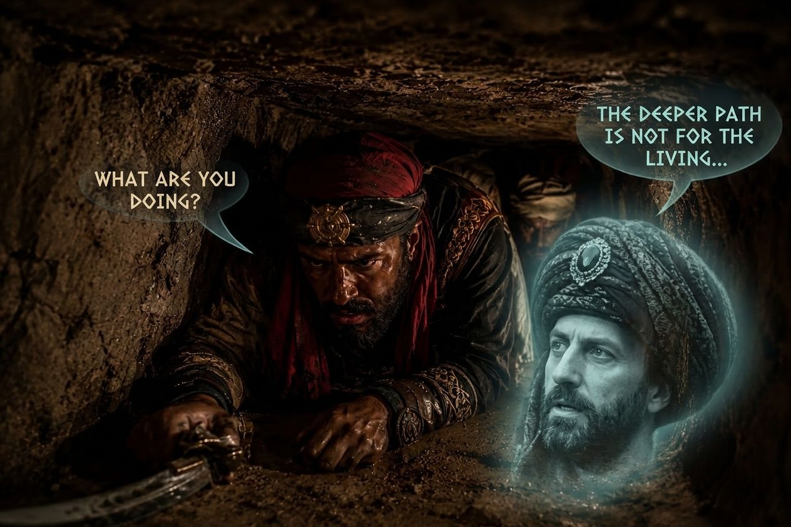
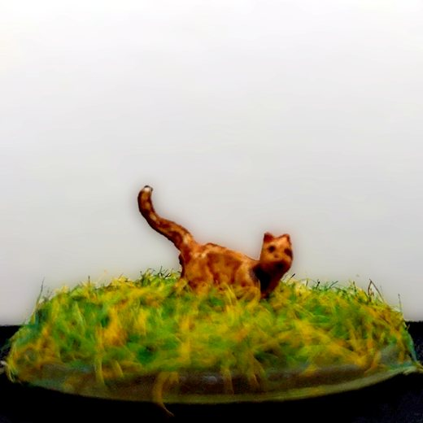

Arc 6 : Les Écumeurs Noirs et l'Innommable

En parcourant leurs terres, les héros trouvent dans une grotte un trésor protégé par une puissante magie. Ils la déjouent, mais creusent sans le vouloir un tunnel de plusieurs dizaines de lieues. Par ce tunnel, le propriétaire du trésor, un sorcier à la tête des pirates des Écumeurs Noirs, envoie ses hommes le reprendre… en rampant.
Un soir, des paysans apportent au château un pirate inconscient, les genoux écorchés et les mains gelées. Les héros le soignent, l'enferment à la cave, et offrent le couvert aux paysans. Mais dans la nuit, Kaelis surprend ces paysans en train d'emporter le trésor : ce sont des pirates déguisés ! L'un d'eux est un changeforme, Kila Mille-Peaux, qui peut prendre l'apparence des créatures qu'il porte en lui, ici un loup-garou. Aldaron montre ses talents de nageur, Azog ses talents d'épéiste, et la bête, blessée à mort, prend la forme d'une petite fille apeurée, que Kaelis soigne.
L'un des visages du changeforme est un dragon oublié, Aldryx, contrôlé par le sorcier. Aldryx porte les héros jusqu'au repaire du sorcier, sur l'île de Thalassyr. Le sorcier les reçoit et leur apprend qu'il fait partie des Ascètes Éternels, l'ordre religieux qui vivait autrefois dans leur château de Garches. Azog l'égorge sans autre forme de procès. C'était l'Innommable. ⚑ L'Innommable
Libérés, ses serviteurs viennent grossir les rangs des domestiques du château, comme le grémien Pekko. D'autres, comme le grémien Bort, restent sur l'île avec Aldaron, qui y reste sous sa forme de chat. Selon ses dernières volontés, le corps du sorcier est ramené au château, et Kaelis arrête sa décomposition. Le changeforme s'installe aussi à Garches : il cherche une galerie oubliée vers le cœur de la terre, où brûle le feu qui pourrait lui rendre son souffle de dragon. Le sorcier s'est laissé vaincre un peu trop facilement, et les héros restent sur leurs gardes. ⚑ La galerie vers le cœur du monde

